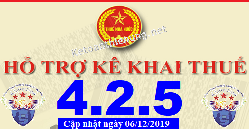
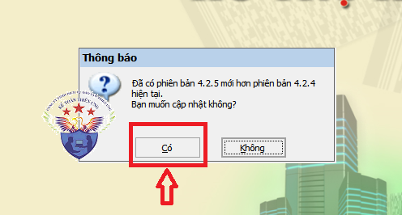
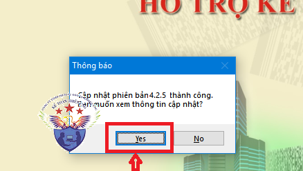

Phần mềm hỗ trợ kê khai thuế HTKK 4.2.5 mới nhất 2019 là Phần mềm HTKK 4.2.5 mới nhất ngày 06/12/2019 của Tổng cục thuế. Download phần mềm HTKK 4.2.5 miễn phí tại đây.
Ngày 06/12/2019 Tổng cục Thuế thông báo về việc Nâng cấp ứng dụng Hỗ trợ kê khai (HTKK) theo kiến trúc và công nghệ mới phiên bản 4.2.5
TỔNG CỤC THUẾ THÔNG BÁO
V/v: Nâng cấp ứng dụng Hỗ trợ kê khai (HTKK) phiên bản 4.2.5 đáp ứng yêu cầu nghiệp vụ và một số nội dung phát sinh
Tổng cục Thuế thông báo nâng cấp ứng dụng Hỗ trợ kê khai (HTKK) phiên bản 4.2.5 như sau:1. Nâng cấp ứng dụng bổ sung các yêu cầu nghiệp vụ phát sinh
1.1 Cập nhật địa bàn hành chính
- Thành lập 04 phường thuộc thị xã Đông Triều, tỉnh Quảng Ninh theo Nghị quyết số 769/NQ-UBTVQH14 ngày 11/09/2019:
+ Cập nhật xã Tràng An thành phường Tràng An
+ Cập nhật xã Hoàng Quế thành phường Hoàng Quế
+ Cập nhật xã Yên Thọ thành phường Yên Thọ
+ Cập nhật xã Hồng Phong thành phường Hồng Phong
- Thành lập 06 phường thuộc thị xã Chí Linh và thành lập Thành phố Chí Linh thuộc tỉnh Hải Dương theo Nghị quyết số 623/NQ-UBTVQH14:
+ Cập nhật thị xã Chí Linh thành Thành phố Chí Linh, tỉnh Hải Dương.
+ Cập nhật xã An Lạc thành phường An Lạc
+ Cập nhật xã Cổ Thành thành phường Cổ Thành
+ Cập nhật xã Đồng Lạc thành phường Đồng Lạc
+ Cập nhật xã Hoàng Tiến thành phường Hoàng Tiến
+ Cập nhật xã Tân Dân thành phường Tân Dân
+ Cập nhật xã Văn Đức thành phường Văn Đức
1.2 Chức năng kê khai tờ khai thuế tiêu thụ đặc biệt theo Thông tư số 195/2015/TT-BTC (mẫu 01/TTĐB)
- Cập nhật ràng buộc tại bảng I, phụ lục 01-1/TTĐB: Không bắt buộc phải nhập các thông tin “Ký hiệu”, “Số”, “Ngày tháng năm phát hành”, “Tên nguyên liệu/hàng hóa nhập khẩu đã nộp thuế TTĐB”, “Số lượng đơn vị nguyên liệu mua vào/hàng hóa nhập khẩu”, “Thuế TTĐB đã nộp” tại dòng đầu tiên, các dòng khác vẫn để ràng buộc.
-----------------------------------------------------------------------
2. Cập nhật một số lỗi của ứng dụng HTKK 4.2.42.1. Chức năng kê khai Tờ khai đăng ký thuế tổng hợp cho cá nhân có thu nhập từ tiền lương, tiền công thông qua cơ quan chi trả thu nhập (05-ĐK-TH-TCT)
- Cập nhật combo box “Tỉnh/thành phố” tại địa chỉ cứ trú: Khi chọn “TP Hồ Chí Minh” thì ứng dụng hiển thị đúng giá trị vừa chọn.
- Cập nhật chức năng tải bảng kê: Cập nhật mã giới tính Nữ (mã 1), Nam (mã 2) khi nhập trên mẫu biểu bảng kê.
------------------------------------------------------------------------
Bắt đầu từ ngày 07/12/2019, khi lập hồ sơ khai thuế có liên quan đến nội dung nâng cấp nêu trên, tổ chức, cá nhân nộp thuế sẽ sử dụng các chức năng kê khai tại ứng dụng HTKK 4.2.5 thay cho các phiên bản trước đây.

----------------------------------------------------------------------
Download Phần mềm HTKK 4.2.5 tại đây:

Để cài đặt được HTKK 4.2.5, máy tính của NNT cần đáp ứng thông số sau:
- Hệ điều hành WinXP (SP2, SP3), Win 7 trở lên… (không hỗ trợ hệ điều hành iOS, Mac).
- Máy tính có cài .NET Framework 3.5 trở lên (có thể tải bộ cài .NET Framework 3.5 tại đây).
- Nếu máy tính sử dụng hệ điều hành Win 7 trở lên không phải cài đặt .NET Framework 3.5 mà chỉ cần kích hoạt .NET Framework 3.5 đã tích hợp sẵn theo tài liệu hướng dẫn cài đặt tại đây
- Hệ điều hành WinXP (SP2, SP3), Win 7 trở lên… (không hỗ trợ hệ điều hành iOS, Mac).
- Máy tính có cài .NET Framework 3.5 trở lên (có thể tải bộ cài .NET Framework 3.5 tại đây).
- Nếu máy tính sử dụng hệ điều hành Win 7 trở lên không phải cài đặt .NET Framework 3.5 mà chỉ cần kích hoạt .NET Framework 3.5 đã tích hợp sẵn theo tài liệu hướng dẫn cài đặt tại đây
-----------------------------------------------------------------------------------------------
- Mọi phản ánh, góp ý của tổ chức, cá nhân nộp thuế được gửi đến cơ quan Thuế theo các số điện thoại, hộp thư điện tử hỗ trợ NNT về ứng dụng HTKK do cơ quan Thuế cung cấp.
Tổng cục Thuế trân trọng thông báo./.
-----------------------------------------------------------------------
Trường hợp: Máy tính các bạn đã cài phần mềm HTKK 4.2.4 rồi -> Các bạn chỉ cần Bật phần mềm HTKK 4.2.4 đó lên -> Phần mềm sẽ hiển thị Thông báo cập nhật lên Phần mềm HTKK 4.2.5 -> Các bạn bấm nút "Có"

-> Tiếp đó đợi phần mềm chạy cập nhật là xong nhé:

Như vậy là các bạn đã nâng cấp xong Phần mềm HTKK 4.2.5 nhé
------------------------------------------------------------------------